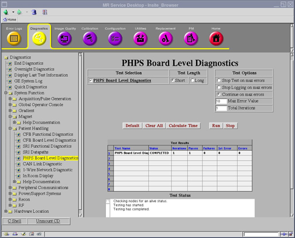

Proprietary to General Electric
Direction 5500113, Rev# 3
Discovery MR750 3.0T Service Methods
Module Version 2.0, Version Date 6/27/08
Proprietary to General Electric |
Diagnostics >> System Function >> Patient Handling>> PHPS Board Level Diagnostics
Diagnostics >> Hardware Location >> Pen Panel Cabinet >> PHPS Board Level Diagnostics
Illustration 1: Data Acquisition Screen

The PHPS BLD Diagnostic obtains status information on the ongoing board diagnostic of the internal power supplies and CFB cable detect.
Table Power Supply
Magnet Power Supply
CFB is connected, Part No. 5167035
CFB monitors status of Magnet Power Supply
CFB monitors status of Table Power Supply
Host computer monitors power status of Cable Interface Box (CIB)
Host computer monitors that CFB connected at PHPS2 (Part No. 5167111)
SRI4 monitors that Table Interface Module (Part No. 5176474) is connected
Click [Calculate Time] to get an estimate of the time it will take to run the selected diagnostics.
Click [Run] to initiate test.
| NOTE: | Other than Test Iterations, the Test Options settings should not be changed from their default settings unless instructed to do so by a GE Healthcare engineer. There are very few circumstances when these settings ever need to be changed. |
Output values are judged pass or fail. In the event of failure, the details of the failure can be found in the GE System Log.
Although, in the case of errors you can click the 1st Error number to see the nature of the error, it is recommended that you view the GE System Log to view all the errors that were recorded.